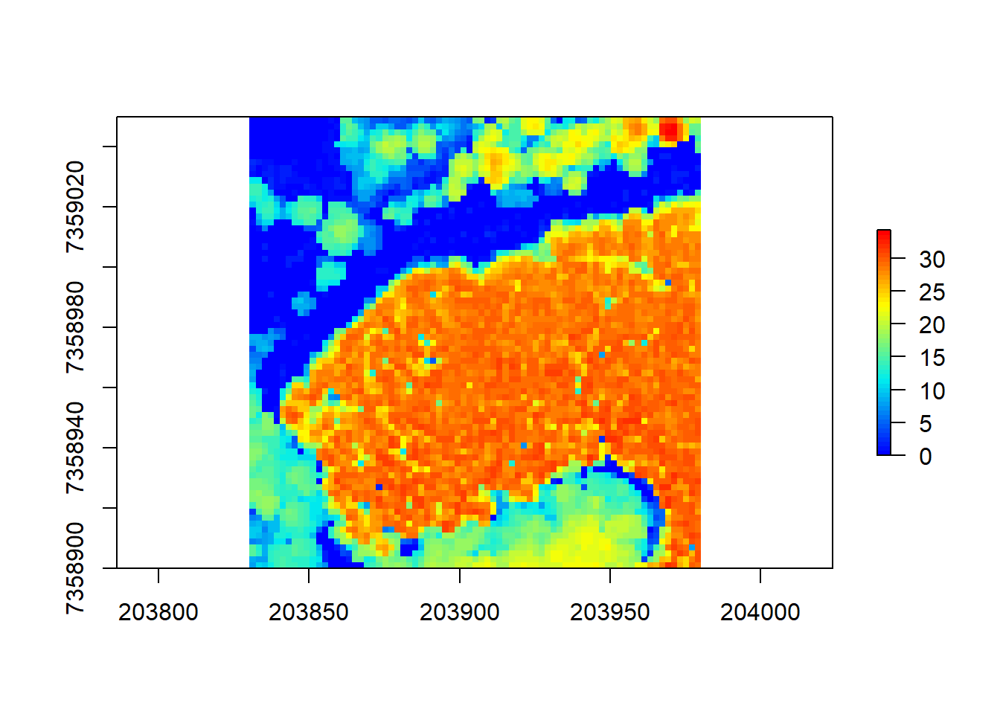
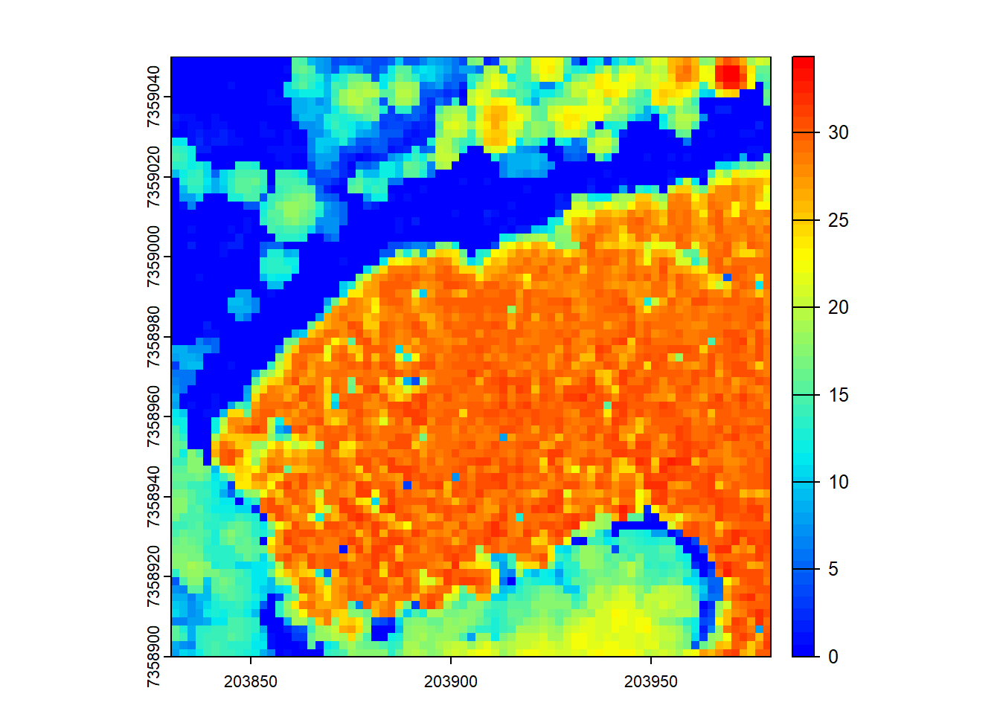
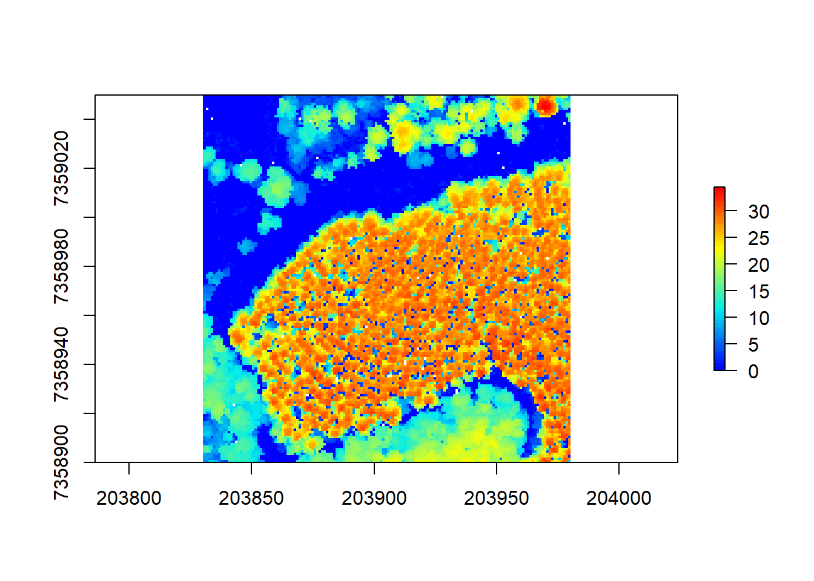
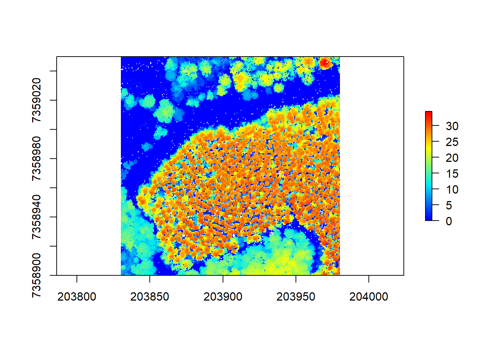
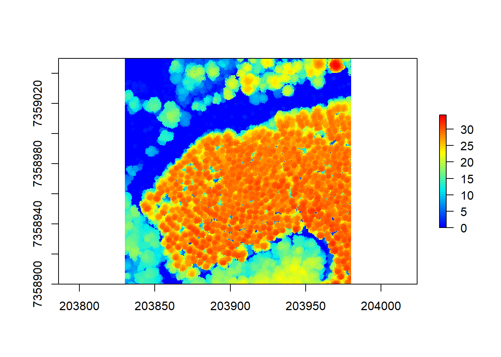
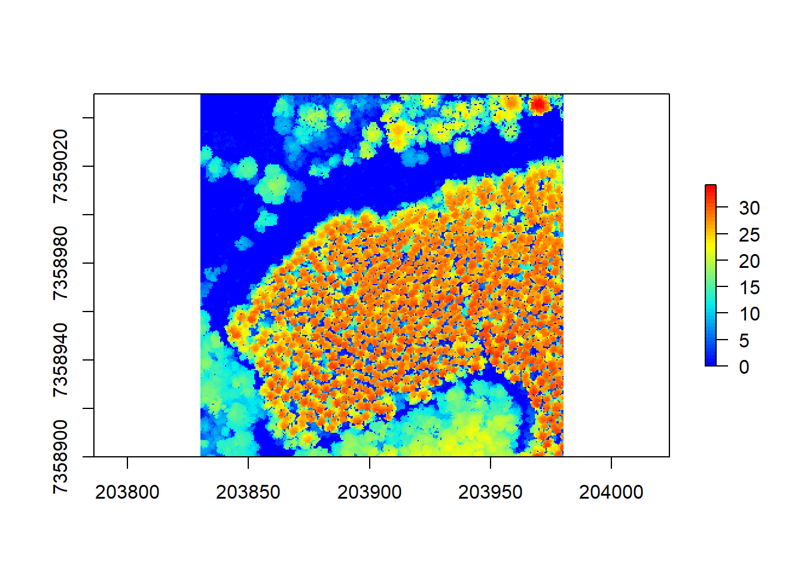
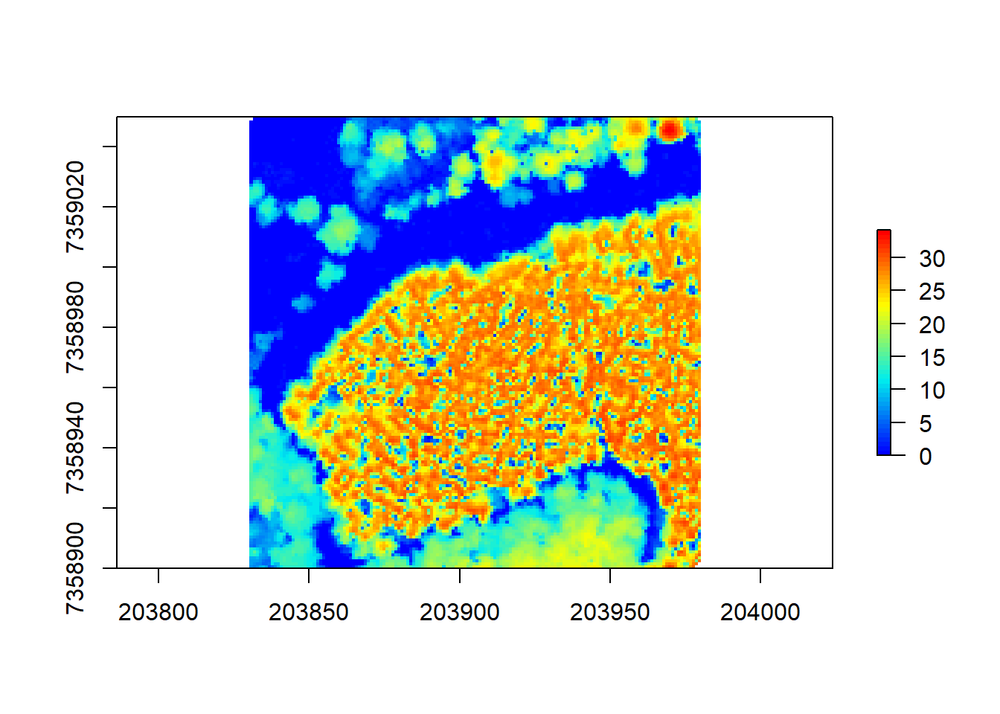
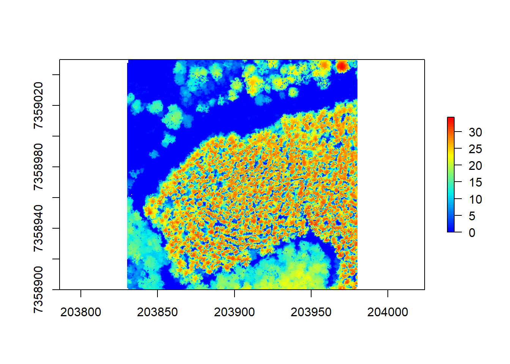
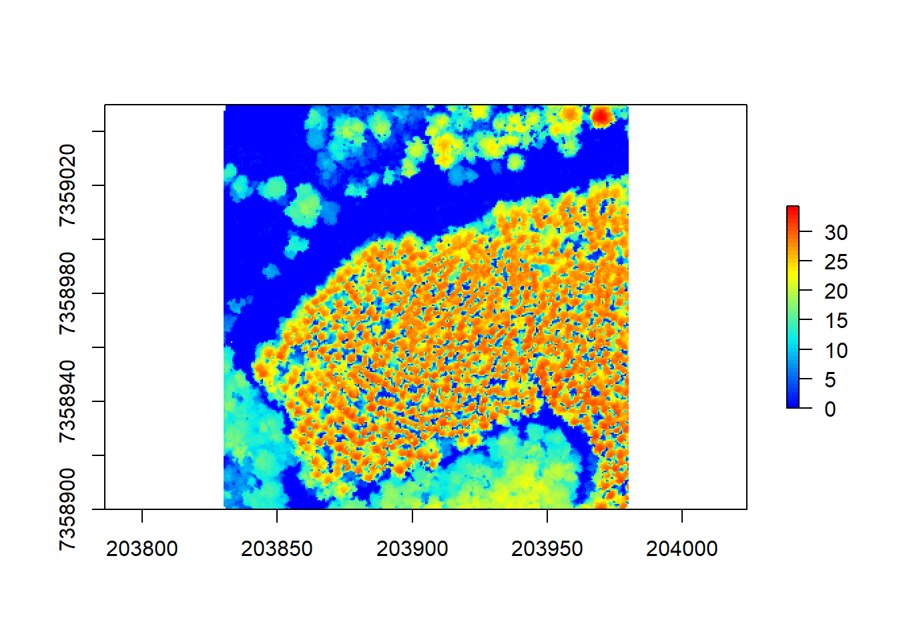
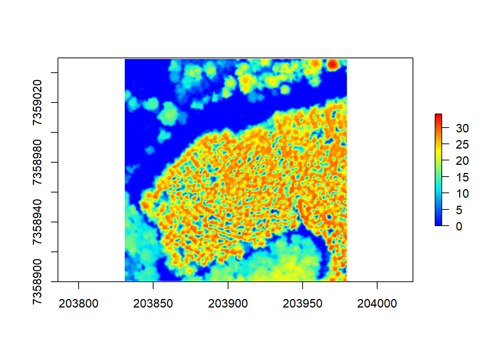

# Clear environment and specific warnings
rm(list = ls(globalenv()))
options("rgdal_show_exportToProj4_warnings" = "none")
# Load libraries
library(lidR)
library(microbenchmark)
library(terra)Canopy Height Models
Relevant Resources
Overview
This code demonstrates the creation of a Canopy Height Model (CHM) using LiDAR data. It shows different algorithms for generating CHMs and provides options for adjusting resolution, sub-circle size, and filling empty pixels.
Environment
Data Preprocessing
In this section, we load the LiDAR data, set a random fraction filter to reduce point density, and visualize the resulting LiDAR point cloud.
# Load LiDAR data and reduce point density
las <- readLAS(files = "data/MixedEucaNat_normalized.laz", filter = "-keep_random_fraction 0.4 -set_withheld_flag 0")
# Visualize the LiDAR point cloud
plot(las)Point-to-Raster Based Algorithm
In this section, we demonstrate a simple method for generating Canopy Height Models (CHMs) that assigns the elevation of the highest point to each pixel.
# Generate the CHM using a simple point-to-raster based algorithm
chm <- grid_canopy(las = las, res = 2, algorithm = p2r())
# Visualize the CHM
plot(chm, col = height.colors(50))
In the first code chunk, we generate a Canopy Height Model (CHM) using a point-to-raster based algorithm. The grid_canopy function with the p2r() algorithm assigns the elevation of the highest point within each grid cell to the corresponding pixel. The resulting CHM is then visualized using the plot() function.
# The above method is strictly equivalent to using pixel_metrics to compute max height
chm <- pixel_metrics(las = las, func = ~max(Z), res = 2)
# Visualize the CHM
plot(chm, col = height.colors(50))
The code chunk above shows that the point-to-raster based algorithm is equivalent to using pixel_metrics with a function that computes the maximum height (max(Z)) within each grid cell. The resulting CHM is visualized using the plot() function.
# However, the grid_canopy algorithm is optimized
microbenchmark::microbenchmark(canopy = grid_canopy(las = las, res = 1, algorithm = p2r()),
metrics = pixel_metrics(las = las, func = ~max(Z), res = 1),
times = 10)
#> Unit: milliseconds
#> expr min lq mean median uq max neval
#> canopy 31.1732 31.4414 39.97177 33.1355 41.5963 66.7388 10
#> metrics 99.3423 105.6296 120.02070 114.6749 134.5489 148.2107 10The above code chunk uses microbenchmark::microbenchmark() to compare the performance of the grid_canopy() function with p2r() algorithm and pixel_metrics() function with max(Z) for maximum height computation. It demonstrates that the grid_canopy() function is optimized for generating CHMs.
# Increasing the resolution results in fewer empty pixels
chm <- grid_canopy(las = las, res = 1, algorithm = p2r())
plot(chm, col = height.colors(50))
By increasing the resolution of the CHM (reducing the grid cell size), we get a more detailed representation of the canopy with fewer empty pixels.
# Using the 'subcircle' option turns each point into a disc of 8 points with a radius r
chm <- grid_canopy(las = las, res = 0.5, algorithm = p2r(subcircle = 0.15))
plot(chm, col = height.colors(50))
The grid_canopy() function with the p2r() algorithm allows the use of the subcircle option, which turns each LiDAR point into a disc of 8 points with a specified radius. This can help to capture more fine-grained canopy details in the resulting CHM.
# Increasing the subcircle radius, but it may not have meaningful results
chm <- grid_canopy(las = las, res = 0.5, algorithm = p2r(subcircle = 0.8))
plot(chm, col = height.colors(50))
Increasing the subcircle radius may not necessarily result in meaningful CHMs, as it could lead to over-smoothing or loss of important canopy information.
# We can fill empty pixels using TIN interpolation
chm <- grid_canopy(las = las, res = 0.5, algorithm = p2r(subcircle = 0.15, na.fill = tin()))
plot(chm, col = height.colors(50))
The p2r() algorithm also allows filling empty pixels using TIN (Triangulated Irregular Network) interpolation, which can help in areas with sparse LiDAR points to obtain a smoother CHM.
Triangulation Based Algorithm
In this section, we demonstrate a triangulation-based algorithm for generating CHMs.
# Triangulation of first returns to generate the CHM
chm <- grid_canopy(las = las, res = 1, algorithm = dsmtin())
plot(chm, col = height.colors(50))
The grid_canopy() function with the dsmtin() algorithm generates a CHM by performing triangulation on the first returns from the LiDAR data. The resulting CHM represents the surface of the canopy.
# Increasing the resolution results in a more detailed CHM
chm <- grid_canopy(las = las, res = 0.5, algorithm = dsmtin())
plot(chm, col = height.colors(50))
Increasing the resolution of the CHM using the res argument provides a more detailed representation of the canopy, capturing finer variations in the vegetation.
# Using the Khosravipour et al. pit-free algorithm with specified thresholds and maximum edge length
thresholds <- c(0, 5, 10, 20, 25, 30)
max_edge <- c(0, 1.35)
chm <- grid_canopy(las = las, res = 0.5, algorithm = pitfree(thresholds, max_edge))
plot(chm, col = height.colors(50))
The grid_canopy function can also use the Khosravipour et al. pit-free algorithm with specified height thresholds and a maximum edge length to generate a CHM. This algorithm aims to correct depressions in the CHM surface.
# Using the 'subcircle' option with the pit-free algorithm
chm <- grid_canopy(las = las, res = 0.5, algorithm = pitfree(thresholds, max_edge, 0.1))
plot(chm, col = height.colors(50))The subcircle option can be used with the pit-free algorithm to create finer CHMs with subcircles for each LiDAR point, similar to the point-to-raster based algorithm.
Post-Processing
Usually, CHMs can be post-processed by smoothing or other manipulations. Here, we demonstrate post-processing using the terra package and the focal() function for smoothing.
# Post-process the CHM using the 'terra' package and focal() function for smoothing
ker <- matrix(1, 3, 3)
schm <- terra::focal(chm, w = ker, fun = mean, na.rm = TRUE)
# Visualize the smoothed CHM
plot(schm, col = height.colors(50))
Post-processing of CHMs often involves smoothing to improve data quality or remove noise. In this example, we use the terra::focal() function to perform a focal mean smoothing on the CHM, resulting in a smoother representation of the canopy height.
Conclusion
This tutorial covered different algorithms for generating Canopy Height Models (CHMs) from LiDAR data using the lidR package in R. It includes point-to-raster-based algorithms and triangulation-based algorithms, as well as post-processing using the terra package. The code chunks are well-labeled to help the audience navigate through the tutorial easily.